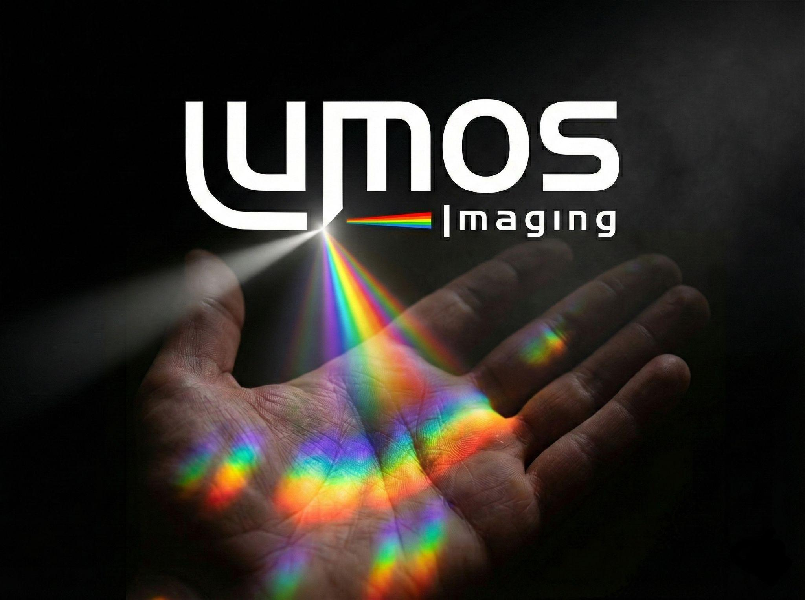

Spectral Intelligence, Unbound
Smart sensing is about extracting information, not creating data.
Scalable. High-Resolution. Machine-learning friendly. Efficient.
👁️ See Chemistry, Not Just Color
Standard cameras are blind to the real world. They compress infinite complexity into three broad channels (Red, Green, Blue).
Lumos sees the chemistry. By resolving material composition, moisture, and biological stress invisible to the naked eye, we allow machines to distinguish between healthy tissue and tumors, or real fruit and plastic replicas.
🚀 Answers, Not Terabytes
Why capture a 50GB data cube just to answer a “Yes/No” question? Traditional spectral cameras generate unmanageable mountains of data that clog pipelines. We solve this at the source. We capture optically compressed signals that can reduce bandwidth by ~50x, enabling real-time answers at the edge or on-demand processing from the cloud. Ideal for many modern applications.
📉 True HD at Consumer Scale
Snapshot spectral cameras have historically been low-resolution (often VGA) and prohibitively expensive ($20k+). We break this barrier. By replacing complex glass optical trains with a single wafer-level chip on a standard CMOS sensor, we deliver 1 Megapixel spectral resolution at semiconductor economies of scale.
The Data Bottleneck
Hyperspectral imaging has long been trapped by the “Dimensionality Curse.” See for yourself how quickly raw data becomes unmanageable—and how Lumos solves it.
Data Explosion Calculator
| Format | Channels in image | Spectral Bands | Bits per pixel | Relative Size | Single Frame | Video Stream |
|---|
* Note on Lumos Bands: Unlike traditional sensors that capture specific, pre-defined wavebands (which increases data size linearly), Lumos captures the entire continuous light field compressed into a single 16-bit diffractogram. We do not capture "bands"; we capture the physics of light itself. Any number of bands can be mathematically reconstructed, if desired, from this single frame later, meaning our raw data footprint remains constant regardless of spectral resolution. However, we have shown that the intrinsic dimensionality of the spectral space is at least 25.
Choose Your Journey
New to Spectral Imaging?
Discover how the “Chemistry of Light” is revolutionizing healthcare, agriculture, and robotics.
Why hasn’t it scaled?
Learn about the three barriers that have kept spectral imaging mostly in the lab.
The Lumos Solution
See how we combine Nanofabrication and Computational Imaging to break the Iron Triangle.